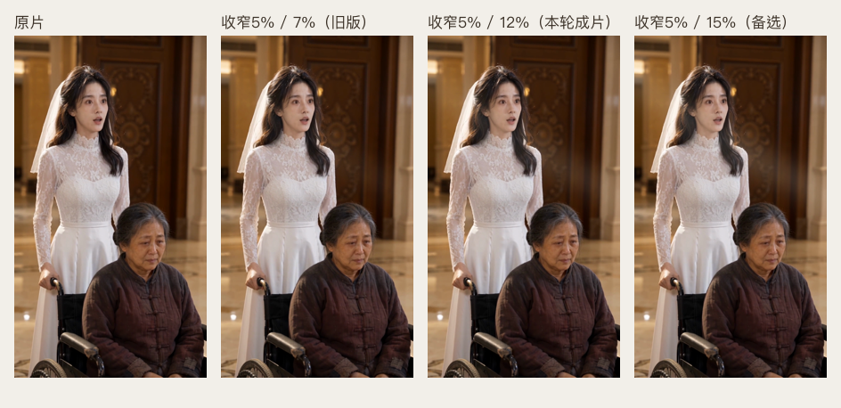
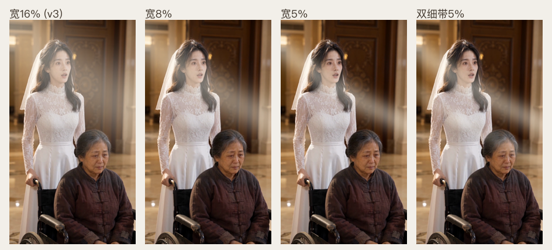
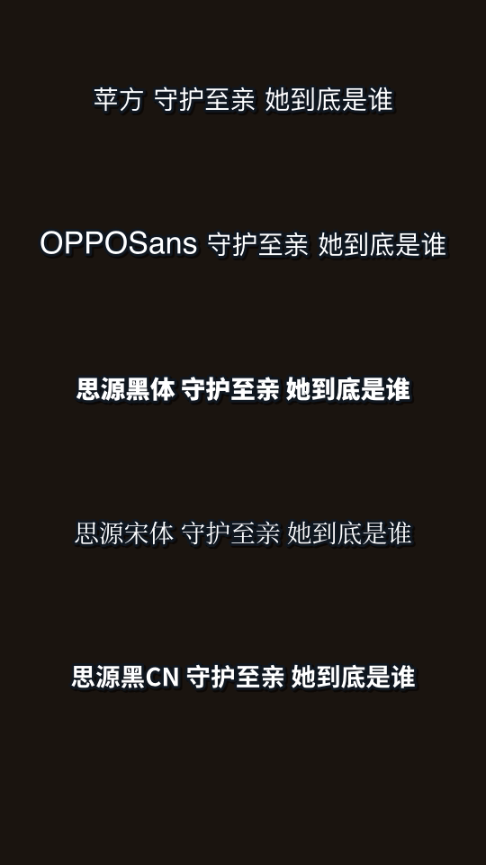
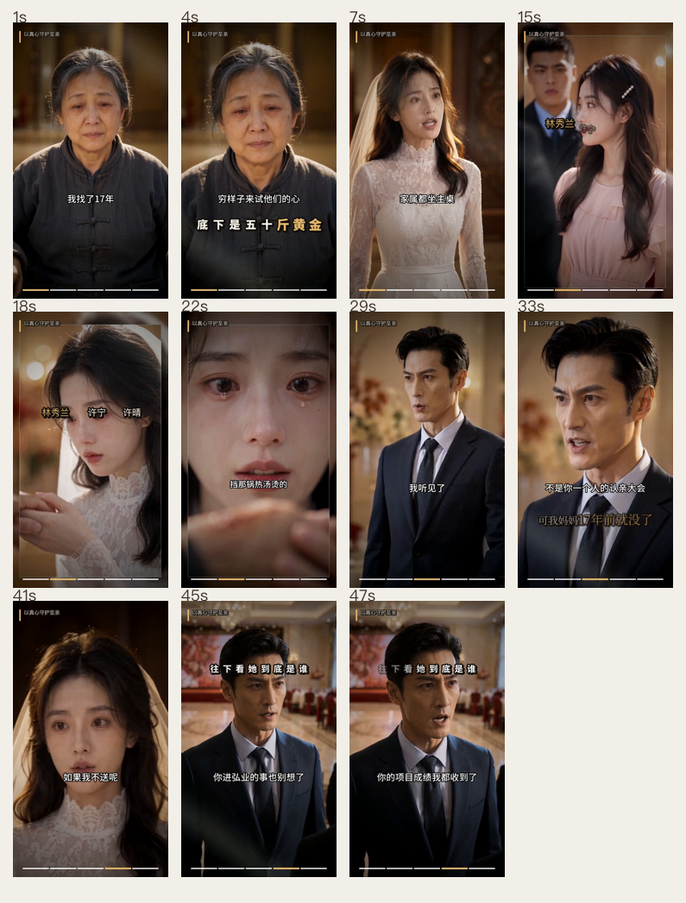
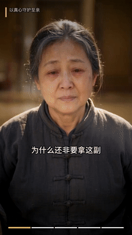
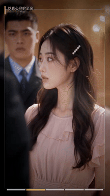
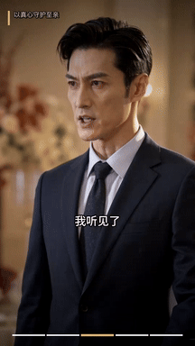
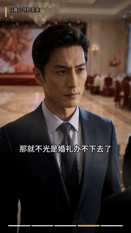

我没有再凭感觉推，而是拿本机把平台查重常用的那一层近似复现了一遍：把画面缩成 32×32 的灰度小图，取低频，算出一个 64 位的「画面指纹」，再看加了光带之后有多少位变了。位数变成 0，就等于算法完全看不出你加过东西。
取了这部剧三个不同场景的帧，每种参数扫过九个不同位置（模拟每 1.5 秒抽一帧），结果如下：
| 做法 | 平均变了几位 | 同一场戏换个扫光位置，两条片子能不能被分开 |
|---|---|---|
| v3 现状：宽 16%、强度 7% | 0.6 位 | 84 组里有 48 组完全一样，一半以上白扫 |
| 收窄到 8%、强度 7% | 0.9 位 | 比原来好一点 |
| 收窄到 5%、强度 7%（旧版，已被取代） | 0.7 位 | 84 组里 34 组完全一样 |
| 收窄到 5%、强度 4% | 0.4 位 | 基本等于没加 |
| 收窄到 5%、强度 10% | 1.2 位 | 开始有点动静 |
| 收窄到 5%、强度 12%（本轮采用） | 1.5 位 | 84 组里 20 组完全一样（7% 是 34 组、15% 是 5 组） |
| 收窄到 5%、强度 15% | 2.2 位 | 84 组里只剩 5 组完全一样，真能分开了 |
我把全片参数包里的几项拆开单独测了，结果有点意外：
| 处理 | 画面指纹变了几位 | 怎么理解 |
|---|---|---|
| 亮度整体 +3% | 0.0 位 | 整张图一起变亮，明暗的相对次序没变，指纹一个数都不动 |
| 对比度 1.03 | 0.0 位 | 同上 |
| 裁掉边缘 8 像素再放大 | 1.3 位 | 画面里的东西挪了位置，有用 |
| 暗角 | 1.7 位 | 四周变暗、中间不变，是「不均匀」的变化，有用 |
| 这几项合起来（A3 全套） | 3.7 位 | 真正干活的是这一套 |
一句话：只有「这儿亮一点、那儿暗一点」的不均匀变化才动指纹，整张图一起调色是白调。我前几轮把「亮度偏移」列成有效手段，这次实测不成立，一并撤回。这也正好解释了光带为什么要收窄——又宽又淡，接近整张图一起变亮，反而最没用。
【已被取代·原口径】「宽度从 16% 收到 5%，倾角 32°，6.5 秒扫一次，峰值仍锁在 7%，「不明显」是定过的口径，不自行调高」。7% 那版成片和抽帧已另存 存档_*_7pct*，没删。
【2026-11-14 新口径】张老师拍板：峰值 7% → 12%，移动速度「稍微快一点」→ 一个周期 6.5 秒改 5.0 秒（快约 23%，周期帧数 156 → 120）。宽度 5%、倾角 32° 不变。换了周期就换了一个新帧目录，避免旧帧混进去把光带位置弄乱。


这一轮顺手把做法也换了：光带改成一组循环图片（7% 版 156 张、本轮 12% 版 120 张），直接叠进渲染，不再一张张画 1152 张完整图层。文字交给字幕渲染器之后，出片快了一大截。
你连着两轮说「动效单调、样式单调、有 PPT 感」，我查了几个开源的短视频字幕项目，找到一句话说得很直接（Octomind 的 video-captions）：
我们前面 v1–v3 用的正是这个办法：Python 逐帧画 PNG，再叠上去。淡入淡出、左移一点、再加一行——能做的就这些，所以看着单调。而短视频里那种活泼的字，是字幕文件里的逐字动画：每个字单独弹、单独转、单独变色，由播放器自带的字幕渲染器一次画完。这台机器的 ffmpeg 自带这个渲染器，本机还装了几款能商用的中文字体，一个库都不用装。
| 位置 | 原来（v3） | 现在（v4） |
|---|---|---|
| 整体样式 | 半透明卡片、深色底框、竖金线、标题区 | 没有底框，粗描边加硬阴影，字直接压在画面上 |
| 开场悬念句 | 整句淡入，一行一行往上挪 | 逐字弹跳：每个字从 55% 放大弹到 120% 再回落，带一点歪着甩正，最后三字变金色放大 |
| 中间三条文字 | 三张卡片，每张一个名字 + 一句完整台词，约 60 字 | 三个名字横向小标签，依次从左滑入 + 甩正，共 7 个字 |
| 金句 | 白字描边，整句淡入 | 宋体整句滑入，句子里的数字部分自动挑出来放大变金色 |
| 收尾句 | 描边大字淡入 | 打字机逐字蹦出，之后整体淡出 |
| 字体 | 全程苹方一种 | 四种：思源黑体特粗、OPPO Sans、思源宋体、思源黑体粗体 |

文字内容还是老规矩，一句都没手写：悬念句从开场钩子里自动取逗号后面那半句，人名从人物表取，金句从金句库取，收尾句从悬念收尾库取。进度条保留，仍是纯图形五段刻度，没有任何结构词。
| 项目 | 做什么的 | 对我们有用的那点 |
|---|---|---|
| Capite（MIT） | 本地跑的字幕生成器，27 套动效预设 | 明确写「为什么用字幕文件而不是逐帧画」：逐帧画又慢又吃内存，字幕文件让 ffmpeg 一次编码就叠完 |
| Octomind video-captions | 短视频字幕流水线，有弹跳／卡拉OK／方框三套预设 | 直接点破「逐帧画字 = 又平又低质感」，也是这轮换做法的依据 |
| Karaoke Captions | 逐字高亮的字幕生成 | 逐字上色、描边、柔阴影的标准写法 |
| Karaoke Music Video Generator | 歌词逐字变色 | 逐字填色标签的用法 |
这些项目大多靠语音识别拿「每个字在第几秒」，我们是零解说纯剪、没有解说音轨，所以那部分用不上；借的是字幕文件怎么写逐字动效，时间点仍按我们剪辑清单里的段位来定。另外它们针对英文单词，中文要按「字」拆，这轮脚本是自己按字量宽度排的位置。





① 扫光：已定。峰值 12%、周期 5 秒。仍要提醒一句：别把去重的指望放在这一层，12% 只是从「基本白扫」挪到「中间档」，真干活的是裁切和暗角那套（A3 全套 3.7 位，扫光 1.5 位）。
② 文字样式：已定，合格。四种动效、四种字体、无卡片底框，本轮不再改。
③ 剩下的一件事：上屏那句「点睛金句」由谁选。现在脚本是按固定序号取（永远取金句库第 2 条、钩子第 1 条），跟这条片子讲哪条故事线、哪场戏放在哪一段完全没有关系。查过现成数据：D3 清单 22 段里，剧集包 10 条金句有 7 条能按「同一集 + 时间点落在该段内」自动对上，而且好几个段名本身就是那句金句（S06_谁要你的破轮椅、S22_弘业不是周家开的）。所以选哪句最贴，只有文案编排那一步知道，渲染那一步只知道时间码。建议把「选点睛句」放到文案阶段产出，修饰技能只负责怎么显示。
产物都在 去重预览/编排版_v4/。v1 / v2 / v3 全部保留做对照；剪辑清单、装配器、原 v3 成片、两份去重方案文档和备忘录都没动。生成脚本也留在目录里，标着验证用、不是产线技能。